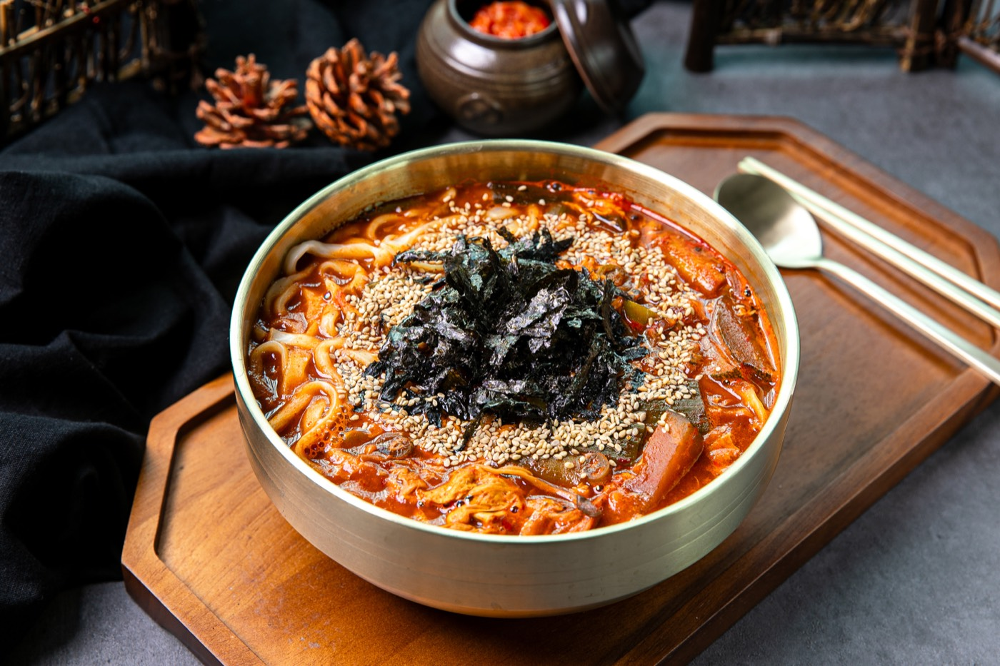

在釜山松亭找美食，推荐松亭海水浴场尽头环岛旁的江陵现代辣刀切面釜山店。招牌是江原道风味的辣酱刀切面（장칼국수）。
不吃辣可以选清汤刀切面，两种都是10,000韩元。
关于汤头
刀切面和酱汤饭的汤底，都加入了大量充分晒干后磨碎的海鲜。所以汤头浓郁醇厚，很多客人说光喝几口汤就像喝了一碗补药一样。 面条是店里亲手制作的生面，粗而有嚼劲，能充分吸附浓郁的汤汁。
菜单与价格
营业信息
- 周一・二・四・五 10:30～24:00（休息 15:00～17:00）
- 周六・日 08:30～24:00（不休息）
- 每周三休息，最后点餐 23:30
- 东海线松亭站2号出口步行833米，松亭海水浴场尽头环岛
- 可停车、外带、团体用餐
相关文章
店铺信息
| 店名 | 江陵现代辣刀切面 釜山店（강릉현대장칼국수 부산점） |
|---|---|
| 地址 | 釜山广域市 海云台区 松亭中央路46号 1层（부산광역시 해운대구 송정중앙로 46 1층） |
| 营业时间 | 周一・二・四・五 10:30～24:00（休息15:00～17:00），周六・日 08:30～24:00 |
| 休息日 | 每周三 |
| 电话 | +82-507-1376-6682 |
常见问题
- 有不辣的菜吗？
- 清汤刀切面（10,000韩元）不辣。
- 地址在哪里？
- 釜山广域市海云台区松亭中央路46号1层，松亭海水浴场尽头环岛旁。
- 营业时间？
- 周一・二・四・五 10:30～24:00（休息15:00～17:00），周六・日 08:30～24:00，每周三休息。